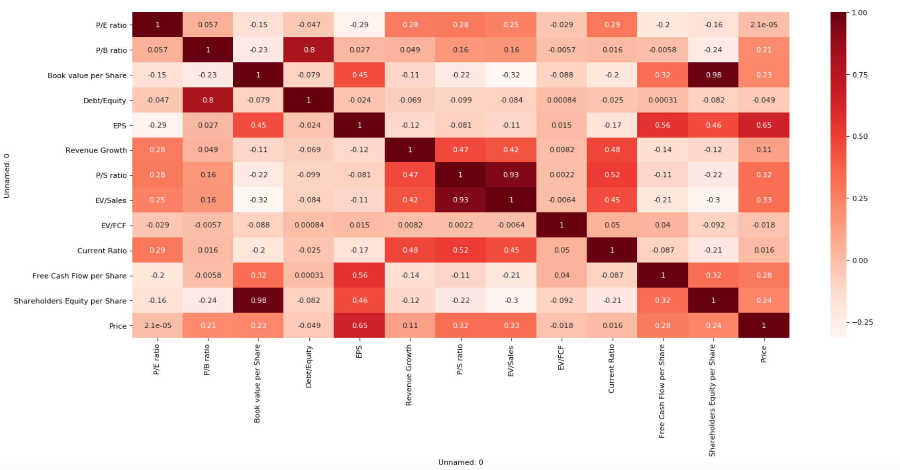
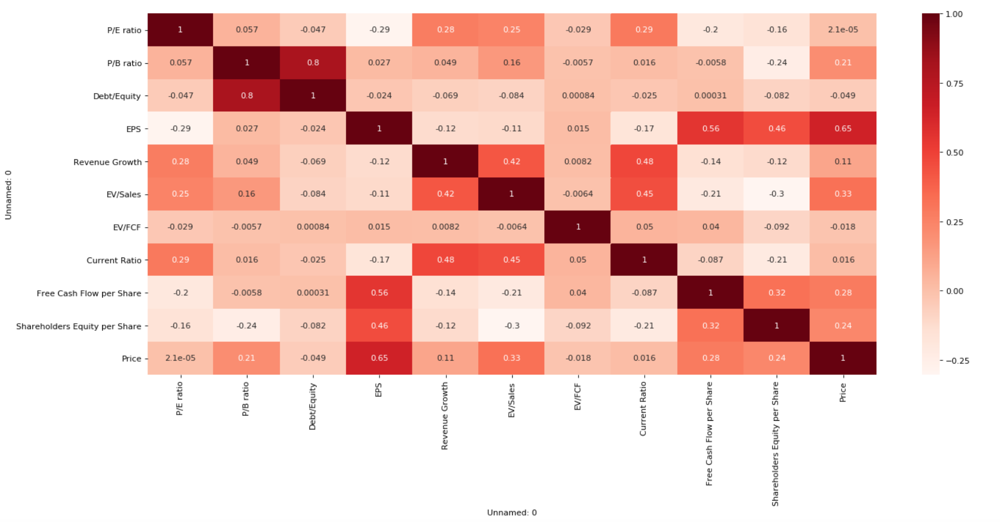
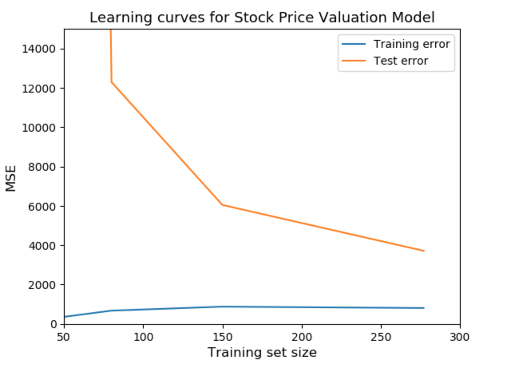
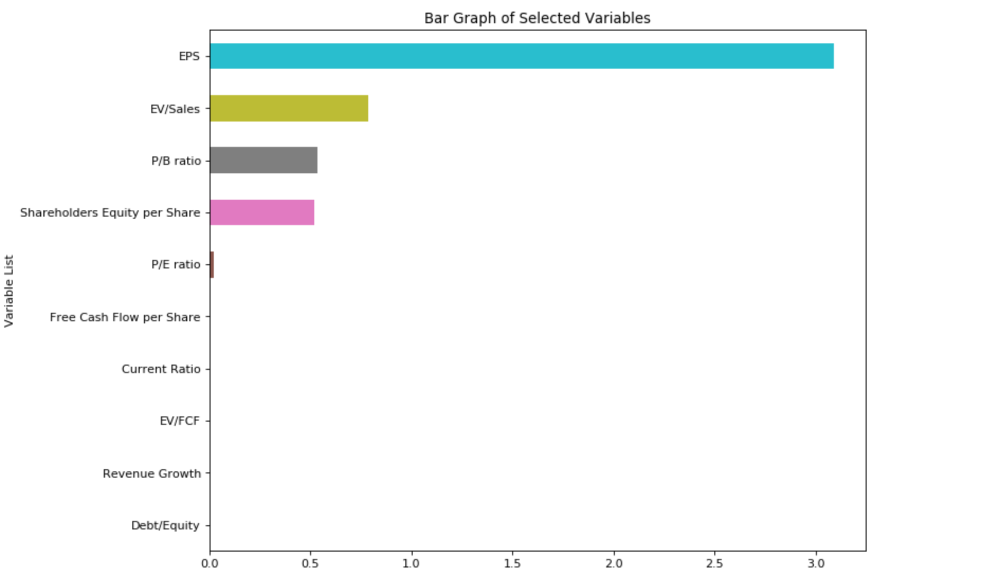
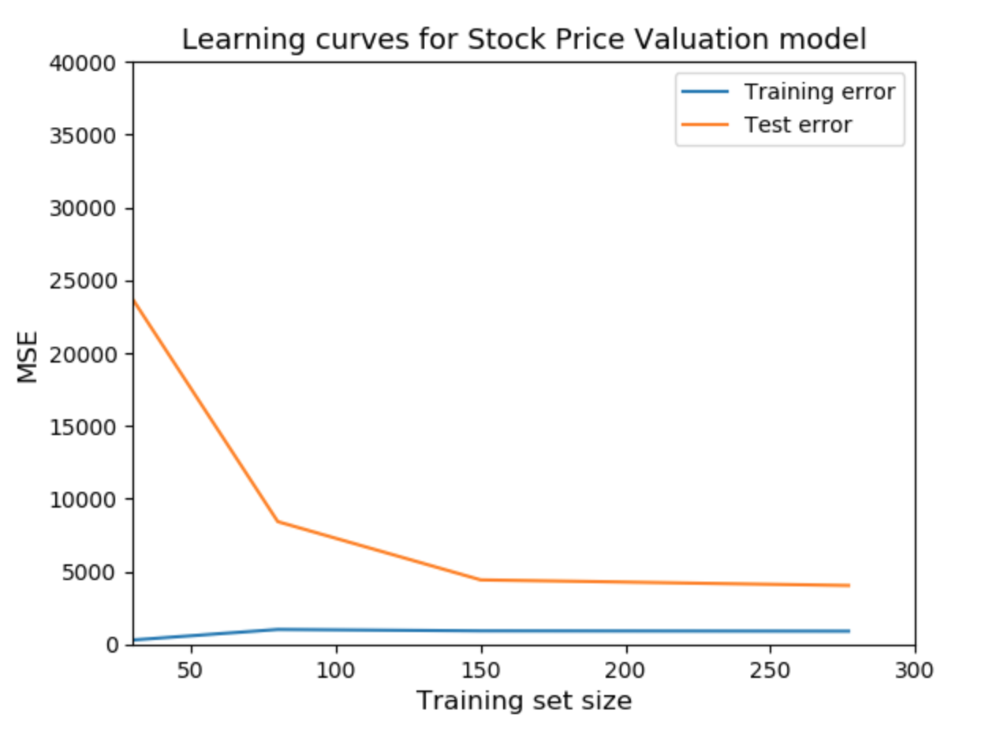
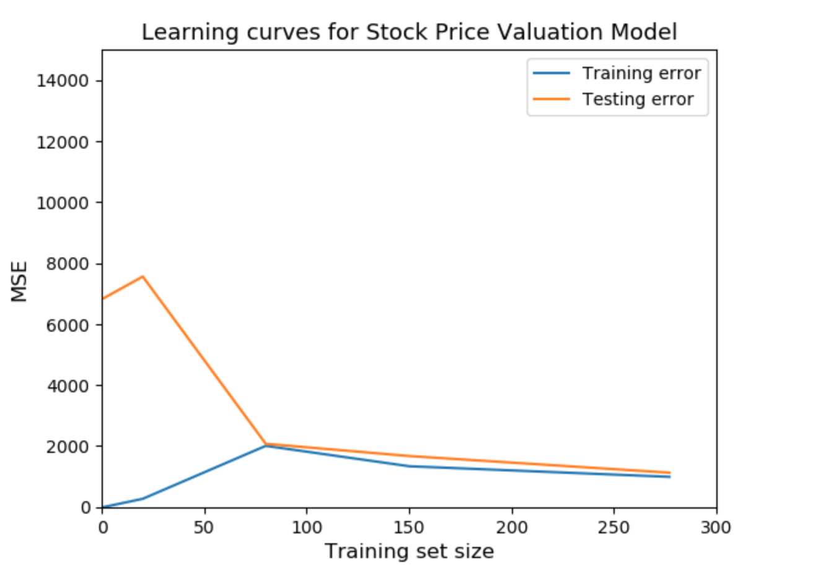
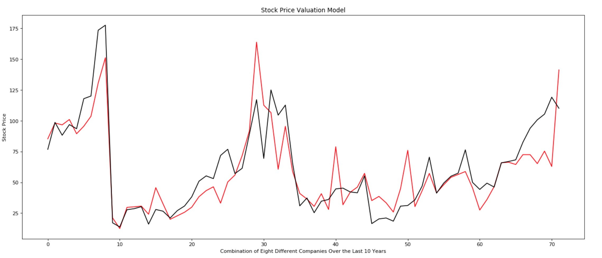

The concept behind this model is to determine which financial metrics are the most useful in explaining the price of a stock, while assuming a linear relationship exists between these metrics and price. The goal is to then do a linear regression in order to find the coefficients of this equation.
We start with a correlation matrix in order to better understand how each variable relates to the others. Variables that are highly correlated with eachother are redundant, since they explain the same thing, and variables that are highly correlated with price are important, and should be left in the final model.

We can see a very strong correlation between P/S ratio and EV/Sales ratio. There is also a strong correlation between Book value per Share and Shareholders Equity per Share. Due to this, we remove Book Value per Share and P/S ratio. This leaves us with the new correlation matrix below.

The balance between bias and variance is one of the most important things to consider when determining just how many features to include in a model, and just how much the model is over or underfitting. Bias is a measurement of how well the model performs on the training data. Low to zero bias indicates a model that has essentially memorized the pattern of the training set. Variance on the other hand, looks at the error when the model is fit to the test set versus the training set. Models that have low bias will have higher variance, and vice versa. Below, we can see the learning curve of our test and training set. The large gap between the two indicates that our model has low bias and very high variance, which makes sense since we still have around a dozen features in our model, and we are likely overfitting.

In order to reduce the complexity of our model, we implement Lasso Regression for feature selection. What this does is leverage the L1-norm in order to completely eliminate certain features in the model, therefore lowering model complexity and combating overfitting. The outcome of the Lasso Regression package in Python can be seen below.

The new learning curve after removing some variables with Lasso Regression is shown below.

We can remove a few more features by hand since we can see that there is still a bit of variance that can be eliminated. A small increase in bias can often lead to a substantial decrease in variance, and we work to balance this until the error between the two is irreducible, which is what we see below.

Now that we have our features selected for our model, all that is left to do is run a linear regression on them with price as the response variable, and then use these coefficients to construct our model. The final output is shown below, and it can be seen that the model performed reasonably well. The x-axis is not time, rather it is eight different companies over various years (for example Nike during 2013-2018, McDonalds 2012-2015, ect.) and the y-axis represents the stock price of these companies during these years. The red line is the where the model would price the stock and the black line is the actual price.

If we can understand which metrics contribute to the price the most, and describe this relationship with a linear equation, we can then pass the data associated with these financial metrics for every stock included in the NASDAQ through this model, and get an an estimate for price. We can then compare this estimate to what the price actually is, and if we see a seriously underpriced stock, we can further explore it to possibly find the next great investment.